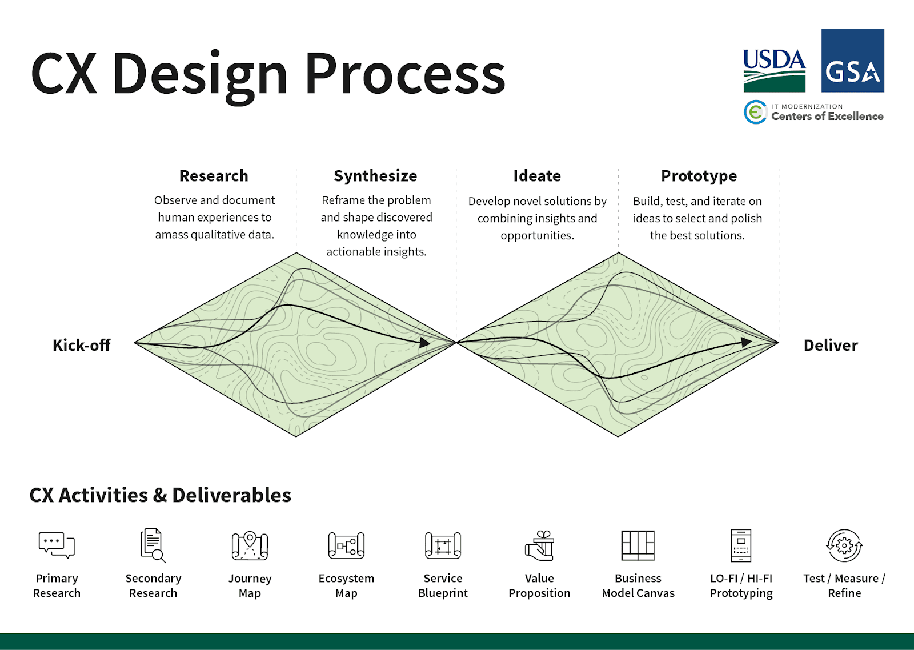

How CX is emerging in the public sector and how digital service teams can support it
Customer experience (CX) is weaved into the fabric of our daily lives. Whether we’re getting groceries or paying bills, companies are working — and investing — to deliver good experiences for us. By 2022, companies will spend a staggering $641 billion on CX technologies worldwide, experts predict.
In the private sector, CX is certainly a powerful way to earn business — but it’s also a means to build trust. Over time, our experiences either convince us that something is dependable, or not. And that is spurring the federal government to start embracing CX, as agencies seek to strengthen public trust in government services.
In this post, we’ll examine the emerging world of customer experience in the government space, and how we’re working to support it. (As a follow-up, you can read this practical guide for getting started with CX and learn about the principles that drive it.)
The state of government CX
Across government services, we often see customers come from a place of skepticism, low expectations, and mistrust. Back in 2011, even before she worked at Code for America and 18F, Cyd Harrell astutely called out the importance of respect as a design value in civic tech:
“A citizen is part owner in a democracy, but at the same time governments are monopolies and citizens can’t just take their business elsewhere if they don’t like the service. Recognizing this, the interface must respect the citizen’s dignity and time. The citizen should be treated as an equal, never as a subordinate.”
Similarly, Jim Clifford, director of the IRS’ Taxpayer First Act Office, set out to design an initial strategy focused on ‘delivering a higher degree of trust’ among Americans, ‘especially aimed at segments of the population who do not trust or fear the government.’
Forrester’s 2020 US Federal Customer Experience Index found that the government is still trailing the private sector, significantly so. Yet there are impressive strides already being made to start closing the gaps — starting with the U.S. federal government Cross-Agency Priority (CAP) Goals specifically related to customer experience: Improving Customer Experience with Federal Services.
An example of these priorities in action is the Department of Veterans’ Affairs (VA). Back in 2015, Martha Dorris — who was Director of the General Services Administration at the time — started planting seeds and making the case for CX at the VA. She foresaw employee engagement as a critical driver of CX programs.
“At the VA, veteran’s experience (VE) and employee engagement (EE) go hand-in-hand: You can’t have one without the other. Aside from the hiring process, employee engagement is the single biggest cultural issue impacting customer experience. Engaged employees are happier, which translates to better service for customers.”
The VA’s Chief Experience Officer and Deputy Chief Experience Officer — Lynda Davis and Barbara Morton, respectively — have kept that culture going strong. They recently spearheaded “The CX Cookbook,” brimming with strategies for federal employees.
How CX can improve government
With origins in 1920’s market research, Customer Experience is a discipline that, over time, has systematized the feedback loop between customer research, customer service, and product design. At its best, CX uses connected, well-designed systems to quickly and continuously improve products, services, and interactions.
Government agencies aren’t necessarily structured to be as efficient as the private sector. Naturally, CX will need to be adjusted for public service. We see that as a hurdle, not a blocker.
So, the real question becomes: How can we restructure government processes to create optimal experiences for those they serve?
We explore that question at length in our guides — both on the practical side and philosophical side. But as a starting point, let’s examine the high-level framework that makes sense for government CX.
How can we restructure government processes to create optimal experiences for those they serve?
Building a foundation for successful CX ideally involves large-scale change management and cultural shifts. Organizational and technical Infrastructure shifts may follow, especially in preparation to use technology solutions like Customer Data Platforms (CDPs) to deliver CX at scale. And the technology solutions will have special requirements as well — like being open source, secure, and compliant. We are seeing this as an area where industry management consultants may struggle to deliver.
When Customer Experience is delivered across every layer of the enterprise and technology, we can measure, track, and follow up using customer service protocols in real-time.
Government CX leaders implement human-centered design methodologies from discovery to delivery, as shown in the infographic below, ensuring that the right things are built for the right reasons. With the focus shifted to the end users, better services are delivered.

How we’re supporting government CX
Since 2004, CivicActions has been a leader in innovating open source and open data solutions. With each project, we first consider how our technology will impact the people who need it. When it comes to CX, our approach is no different. Our design values are strongly aligned to the needs of people — both the general public and agency staff, because we know that happier government employees can deliver better services.
With each project, we first consider how our technology will impact the people who need it.
We work to create products and services that ultimately make people feel:
- Included
- Safe
- Empowered
- Successful
Baselining and tracking customer needs, goals, and satisfaction are at the core of our research practices. This qualitative and quantitative data is central to improving CX. We believe that every journey begins with a single step — and our service designers act as guides along the journey to becoming a customer-focused agency.
At CivicActions, we have always been committed to putting people first, and our investments in human centered design have grown along with the government’s interest in it. From our first design hires to our work with the U.S. Web Design System (USWDS), we have sought to strengthen our ability to collaborate with agencies that want to match the private sector’s dedication to delightful customer experience.
CivicActions’ trajectory toward CX over the past few years has looked like this:
2015: Begins to design with USWDS
2019: Invests heavily in human-centered design
2020: Wins design challenge submission for a project with the Centers for Medicare and Medicaid Services
2020: Adds Business Analysts to delivery projects
2020: Appoints Chief Design Officer, Shira Kates
2020: Welcomes Maria Giudice, private sector design leader, to Board of Directors
2020: Invests in accessibility expertise
2020: Begins to develop procurement officer training for CX
As we’ve been building capacity at CivicActions to keep pace with the emerging need for government CX support, we’re excited to work with CX leaders as they envision and implement successful programs to better serve the public.
Learn more about this topic
- Read the ACT-IAC white paper on improving government CX
- Download the Department of of Veterans Affairs’ CX Cookbook
- Watch a panel discussion on the role of UX in an agile team
Let’s optimize public service together
Get in touch with us to talk about creating government digital services that build public trust.